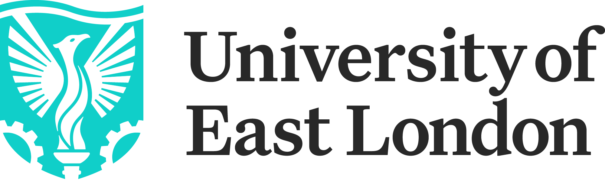

MScDISTINCTION · 2023–2025
Artificial Intelligence and Data Science
University of East London
Developed software, machine-learning and data-analysis skills through applied AI study and project work.
- Machine Learning, Deep Learning and Natural Language Processing.
- Computer Vision, Data Mining and Big Data Analytics.
- Data Structures & Algorithms, Software Development and UML Design.
- Dissertation: Real-Time Stock Market Trend Analysis Using Sentiment Analysis of Global News and Economic Events.
- Built a Python ML pipeline using Pandas, NLTK and Scikit-learn, achieving 82% classification accuracy.